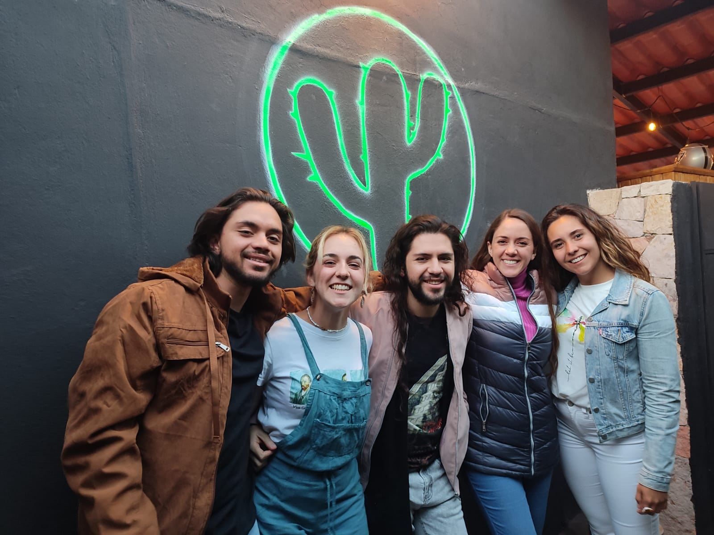

¡Donde la diversión y la buena cerveza se encuentran!

Hace mucho tiempo, en un rincón apartado del desierto, existía un calabozo oculto conocido como "El Calabozo Cervecero". Este lugar no era un calabozo común y corriente; dentro de sus muros de piedra cubiertos de enredaderas, se elaboraban las cervezas más exquisitas y únicas del reino. Pero lo que realmente hacía especial a este lugar era su guardián, un cactus con una personalidad tan espinosa como su apariencia. El cactus, conocido como "Cactulio, el Guardián del Gusto", había pasado siglos cuidando las recetas secretas de las cervezas del calabozo. Se decía que su presencia garantizaba que cada lote de cerveza tuviera un sabor inigualable. Cactulio era un cactus que no solo tenía la capacidad de hablar, sino que también podía moverse y, más sorprendentemente, tenía un don especial para detectar los sabores más sutiles y los ingredientes más exóticos. Un día, un grupo de aventureros llegó al calabozo en busca de la legendaria cerveza "Néctar del Desierto", una bebida tan deliciosa que se decía podía curar cualquier mal y traer alegría infinita. Sin embargo, al llegar, se encontraron con Cactulio, quien les puso a prueba con una serie de desafíos de sabor. Solo aquellos que pudieran discernir los ingredientes secretos y respetar la tradición cervecera del calabozo podrían probar la preciada bebida. Los aventureros, después de pasar por una serie de pruebas de cata, finalmente lograron impresionar a Cactulio con su conocimiento y respeto por el arte de la cerveza. Como recompensa, no solo se les permitió probar el "Néctar del Desierto", sino que también recibieron la bendición del cactus para llevar consigo algunas de las recetas más guardadas. Con el tiempo, la fama de "El Calabozo Cervecero" y su guardián cactus creció, atrayendo a más aventureros y amantes de la cerveza de todas partes. Cactulio, que se había acostumbrado a la compañía, se convirtió en un anfitrión querido, conocido por sus bromas secas y su pasión por la buena cerveza.